Développement d'applications Android
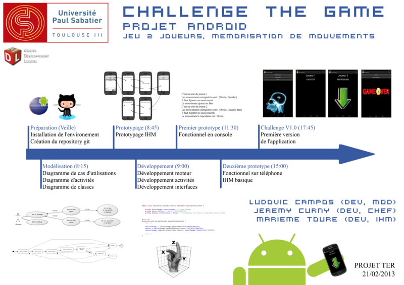
Challenge The Game
Projet réalisé sur 1 jour dans le cadre de l'UE TER du M2DL
(Février 2013)
Développement d'applications Web
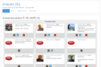
Annuaire ADL
Développement d'un annuaire des anciens étudiants du master informatique
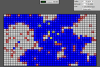
Démineur
Développement d'un jeu de démineur en ligne
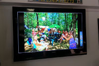
CampiDemo
Développement d'un diaporama de photo avec météo pour projeter sur un écran
Développement de sites web
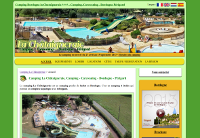
Camping La Châtaigneraie
http://camping-lachataigneraie24.com
(Depuis juin 2012)
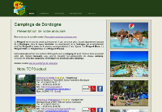
Annuaire campings Dordogne
http://annuaire-campings-dordogne.com
(Depuis septembre 2012)
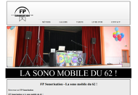
FP Sonorisation
http://sonorisation-animation62.com
(Depuis novembre 2012)
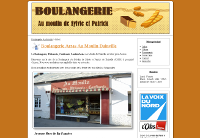
Boulangerie Au Moulin
http://boulangerie-aumoulin.com
(Depuis septembre 2011)
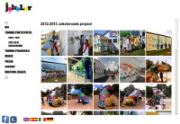
Jokolor
http://jokolor.com
(decembre 2012 - decembre 2013)
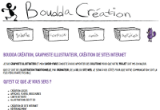
Boudda Création
http://adrianboudes-graphiste.com
(octobre 2012 - octobre 2013)
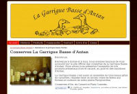
Conserves la Garrigue Basse
http://conserves-lagarriguebasse.com
(aout 2009 - aout 2012)